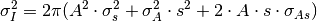
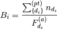

Table of Contents
HFIR single crystalreduction interface is a GUI to download, view and reduce data from HFIR’s four-circle single crystal diffractometer in SPICE format.
Here are some use cases that can be used as examples.
The first step to reduce data with 4-Circle GUI is to set up the reduction environment. Reduction cannot work correctly if this step is SKIPPED.
Usually if it is the first time to reduce data for an experiment, it is recommended to go through the whole experiment to gather some information.
Here is a typical use case to calculate UB matrix after initial setup.
Here is a typical use case to merge all the measuring points (Pt.) in a scan
This is an easy approximation to integrate a peak with background subtraction by specified region of interest.
The pre-requisit is that all events are normalized by monitor counts and scaled up by same factor (e.g, 1500).
Unlike TOF single crystal diffractometer, HB3A uses a different method to integrate diffraction peaks.
Presently, HB3A reduction interface supports 3 types of integrations.
Counts of neutron on any detector shall be normalized by its corresponding monitor count and then be multiplied by a constant specified by user.
But for HB3A, the normalization to counting time is more reliable because the beam monitor may be unstable.
A region of interest (ROI) on the detector can be defined for each scan. The signals in the ROI of each Pt. in a scan construct a 3-dimensional diffraction peak.
The purpose to define the region of interest on detector is to reduce the affect of background noise.
This algorithm is also called simple cuboid integration, which is to approximate the integrated peak intensity.
Measuring one peak usually contains around 20 Pt. in a same scan. In most of the cases, the first and last several measurements (called as Pt in SPICE) are background. Therefore, the background for per measurement can be estimated by averaging the summed number of counts normalized by either monitor counts or measuring time.
The integrated peak intensity is

 is the normalized detector counts in ROI of measurement i
is the normalized detector counts in ROI of measurement i is the estimated background
is the estimated backgroundThe error can be calculated as

For each measurment, the background is calculated as

where  is a set of measurment points that are specified by users.
Usually they are the first and last several measurements in a scan.
is a set of measurment points that are specified by users.
Usually they are the first and last several measurements in a scan.
Then this estimated normalized background value can be applied to each measuremnt, whose counts are normalized.
This algorithm is based on previous algorithm. It is assumed that if the statistic of the diffraction peak is good enough, then the curve, i.e., moving motor position against normalized counts, can be fitted with a Gaussian plus flat background.

The integrated peak intensity and its error will be calculated as

is the normalized detector counts in ROI of measurement i is the estimated background .
.
The error can be calculated as
It is assumed that for a well measured diffraction peak, in 3D, the counts in ROI of each measurement from the edge of the peak to the other edge of peak against the moving motor’s positions should be represented by a Gaussian function with flat background
Then the peak intensity should be the integral of the Gaussian from  to
to  ,
i.e.,
,
i.e.,

The error of the intensity should be calculated by the propagation of fitted error of A and s.

There are some other peak integration algorithms that we discussed. None of them has been implemented. But it is still worth to document them here.
There is no existing algorithm in Mantid to integrate ellipsoid because1 algorithm IntegrateEllipsoids works only for event in unit as time-of-flight.
So far, there is only one algorithm is implemented to integrate peaks for HB3A.
In the Q-space, by masking each measurement, it is assumed that the peak’s intensity is very close to the number of counts in the unmasked cuboid normalized either by measuring time or beam monitor counts with background removed.

where  is the counts of Pt i in the region of interest,
is the counts of Pt i in the region of interest,
 is the normalization factor of Pt i,
and B^{(e)} is the estimated background per Pt with the same
normalization type of .
is the normalization factor of Pt i,
and B^{(e)} is the estimated background per Pt with the same
normalization type of .
For each measurment, the background is calculated as

where  is the normlization of either time or beam monitor counts,
and
is the normlization of either time or beam monitor counts,
and  is the neutron counts of measumrent
is the neutron counts of measumrent  .
.
Then the estimation of the normalized background for each measurement is

where  is the number of measurements used to calculated background.
is the number of measurements used to calculated background.
Category: Interfaces